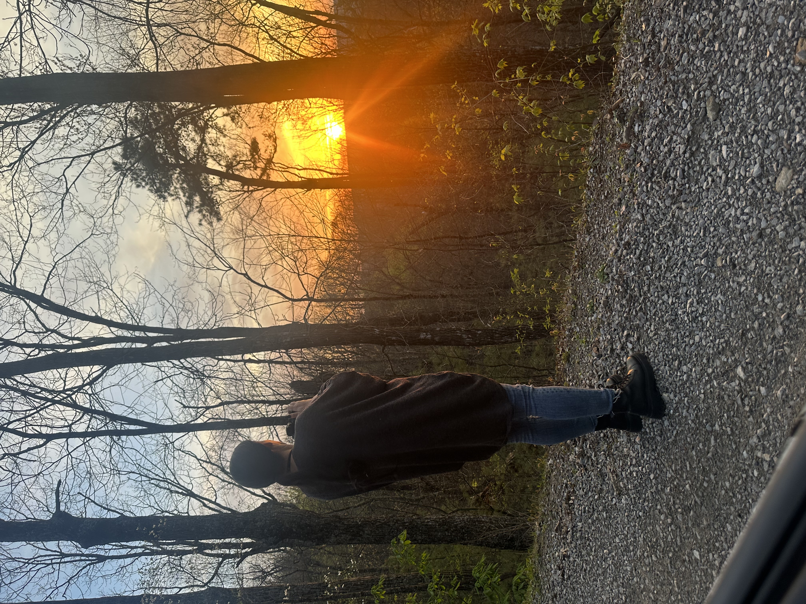

I have had a camera in my hands since the 1980s when I was in middle school and fell in love with capturing moments.
Photographs are snapshots of the smallest moments in time. I love photography and the power it has to preserve memories.
Here is a fun video tutorial on how to edit moody photos!
Still interested? Check out this link to my GITHUB!
CTI110 - Github
123 Main St.
Fayetteville, NC 28303